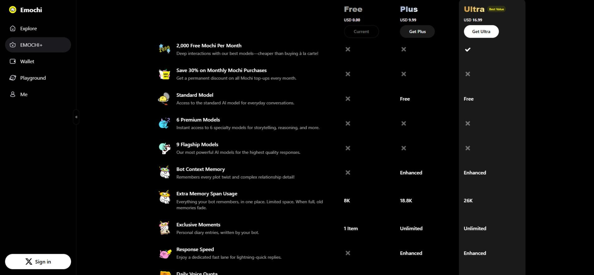
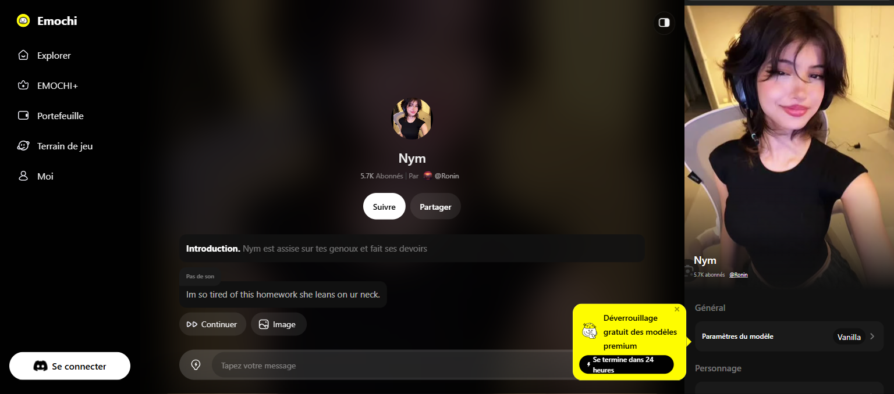

emochi 翻了底朝天：那些藏在菜单里没人点过的设置
你以为它只是个 AI 角色扮演聊天工具？其实记忆跨度档位、敏感内容开关、聊天语言切换、双模式捏人这些功能，藏得比想象中深多了。
你以为 emochi官网 上这款应用就是打开挑个角色聊几句的东西？我之前也是这么想的——直到花了一个晚上把设置菜单翻了个底朝天，才发现这款应用藏了好几个"官方都不怎么宣传"的冷功能。不是那种花里胡哨的彩蛋，是真的能改变使用体验、甚至决定"长线剧情能不能追到底"的干货。
先从emochi下载拿一个装好，再按"藏得有多深 + 有多实用"排序讲。
记忆跨度档位：数字背后的体感
订阅页上那排 8K / 18.8K / 26K，你可能扫一眼就跳过去了——我之前也是。直到追一条剧情追到第三幕，角色突然把我叫成"陌生人"，才意识到这不是几个数字那么简单。
emochi 的记忆跨度以 token 计，直接决定角色回复时能携带多长的对话上下文窗口。三个档位换算成中文体感：免费档 8K 大约一屏半到两屏密集对话，Plus 18.8K 能覆盖两三小时的深度剧情会话，Ultra 26K 接近"整卷不丢线"的体验。跨度满了不是报错，是静默遗忘——最旧的内容悄悄滑出窗口，角色对早期剧情只剩模糊印象，表现就是称呼恢复默认、忘记约定、人设回退到档案基础版。

这个设置藏在订阅页的角落，很多人是"出问题了才发现"。如果你主追一两条长线，18.8K 是分水岭——8K 档追长剧情，第一幕的细节到第三幕角色就"听说过了但记不清"，这种割裂感比卡加载还闹心。
敏感内容开关：原来在这么深的菜单里
这个是我翻了五分钟才找到的。位置在聊天界面的菜单（移动端底部三条杠）→ Settings → Content Settings → Allow Sensitive Content。你可能觉得"敏感内容"听起来有点吓人，但说白了就是给你一个显式确认的动作——平台本身对角色扮演的内容自由度就比较高，社区角色创作也以此为特色，这个开关打开后回复的尺度会明显放开。
三点实际体验后的提醒：一是平台整体分级为成人级，未成年人不该碰；二是即便不开开关，社区角色的内容一致性也不是绝对的——个别没标成人标签的角色也可能中途跑偏，遇到越界内容直接举报就行；三是这个开关对账号全局生效，换设备登录后记得按需重设，别在公共设备上忘了关。
聊天语言切换：界面英文不代表对话只能英文
很多人第一次打开 emochi 就走了——界面全英文，以为只能用英文对话。其实同一个设置菜单里就能选聊天语言，指定中文后角色会用中文跟你聊。
不过有个小坑：语言设置对"新对话"生效最干净，老对话中途切语言，角色可能混着来几句英文。另外角色档案大多是英文写的，中文对话时人设细节偶尔会丢，重要设定最好在对话里用中文重申一遍。网页版还有个额外的坑——界面语言和聊天语言是两回事，聊天语言以设置项为准，别被界面误导。
中文玩家的舒适配置我亲测过：界面默认英文 + 聊天语言选中文 + 人设用中文写 + 敏感内容开关按需。人设、场景这些"你写的内容"用中文写，角色跟你说中文的稳定性最高。

双模式捏人：快模式和专家模式差别比想象中大
脑子里有 OC（原创角色）设定的人肯定想自己造角色。emochi 的捏人有两个模式——快速模式和专家模式，我之前以为只是界面不同，实际用下来差别大了。快速模式几步就能生成立绘开口说话，适合"想聊就聊"；专家模式能精细调角色档案、设定对话风格、甚至写人设背景故事，造出来的角色代入感强得多。
这个功能藏在"创建角色"的入口里，很多人直接用快速模式走完就没回头看。如果你真的想让角色按你脑子里的设定开口说话，专家模式值得花点时间——详细的参数调法和人设写法，我是从emochi文档里翻到的。
一个别踩的坑：记忆漂移的连锁反应
最后说个教训。之前追一条剧情追到 200 多条消息，角色人设开始回退、称呼乱换——我以为是更新出了 bug，重装了两次才发现，根本不是 bug，是记忆跨度满了触发的静默遗忘。重装解决不了，因为云端记录还是那份。
现在的做法是长线剧情定期截图留档，重要约定在中途用消息重申一遍。也建议先用免费档追一条线到"明显忘事"，亲测一次再决定要不要升级订阅——别上来就充 Ultra，结果发现自己根本追不到那个长度。
收尾
emochi 这款应用的隐藏功能，总结下来有个共性：都藏在"设置"菜单里，而它的界面设计让你大概率不会主动点进去看。很多人用了几个月还不知道能切中文对话，不知道有记忆跨度档位，不知道敏感内容开关在哪。花十分钟翻一遍设置，可能比你花一下午挑新角色有用多了。
这些设置的位置和层级可能随版本调整，找不到时应用内也有指引——我当时就是靠内置说明才摸到敏感内容开关的位置。喜欢自己造角色的话，官网还有一套捏人指南，专家模式的参数怎么调、人设怎么写，里面讲得比应用内提示详细多了。
如果你也喜欢把软件翻个底朝天找隐藏功能，emochi 开源的角色模板和配置参考我整理在三个仓库方便随时翻——GitHub 原版 可直接访问，Gitee 和 GitCode 是国内镜像备份，社区里也有人分享了一些调参笔记，翻一翻能省不少试错时间。